Продолжение седьмой части цикла статей, подробно рассказывающих о протоколе MIDI.
Двухэтапное подтверждение (2PC, Two Phase Commit) — это особый метод взаимодействия устройств, при котором все команды подтверждаются и до выполнения, и по завершении. Технически — это набор команд, расширяющих базовую версию протокола MIDI Show Control. Этот набор появился в 1996 году и описан в документе RP-014, выпущенном организацией MMA. Вместе с исходной спецификацией MSC (документ RP-002) он образует новую версию протокола (MIDI Show Control 1.1).
При разработке метода 2PC стояла непростая задача — обеспечить связь нескольких устройств закрытой архитектуры друг с другом, при которой все они работают согласованно либо не работают совсем, независимо от наличия ошибок в коммутационных каналах. Задача была решена с использованием двух фаз (этапов) в коммуникации. На первом этапе все стороны соглашаются о том, что должно быть сделано. На втором этапе стороны реализуют это соглашение и сообщают о результатах.
Метод двухэтапного подтверждения напоминает метод сценической координации, применяемый при взаимодействии стейдж-менеджера и оператора устройства. Первая фаза — ожидания (STANDBY), соответствует команде "приготовиться". Вторая фаза — "выполнить" или "пошел" (GO).
Метод 2PС предлагается использовать для тщательно спланированных шоу и тогда, когда в целях безопасности требуются дополнительные проверки и избыточность в механизмах управления (например, при работе с машинерией или пиротехникой). При этом обеспечиваются проверка данных и обнаружение ошибок в коммутационных каналах.
2PC требует взаимной коммутации устройств. Это значит, что, кроме соединения главного контроллера с контролируемым устройством, требуется и обратное, то есть MIDI-выход пульта управления прибором соединяется с MIDI-входом главного контроллера. Команды 2PC образуют четвертый рекомендованный набор (о первых трех см. предыдущую статью), он приведен в таблице на рис. 1.
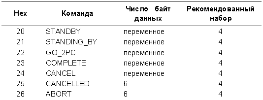
Спецификация предполагает, что в системе 2PC около каждого контроллера и контролируемого устройства присутствует человек-оператор, который называется в данном случае "локальный оператор". Локальный оператор может просто наблюдать за процессом, либо выполнять дополнительную проверку безопасности и ручное вмешательство в управление при сбое оборудования. Предполагается, что локальный оператор выполняет свои функции через специальную панель управления (пульт или схожий интерфейс), который называется "интерфейс локального оператора".
Сообщения 2PC
В отсутствие сбойных ситуаций для выполнения одной сцены в протоколе 2PC используются четыре сообщения. Они показаны в таблице на рис. 2 с указанием порядка следования и стороны-отправителя.
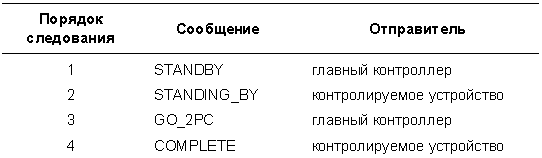
Сначала главный контроллер посылает подчиненному устройству сообщение STANDBY ("приготовиться"). Это сообщение "разогревает" прибор и уведомляет его о том, что скоро должна быть выполнена заданная сцена. В ответ на это устройство отвечает контроллеру сообщением STANDING_BY ("наготове"), показывая свою готовность выполнить данную сцену. Для выполнения сцены главный контроллер посылает сообщение GO_2PC. Последнее сообщение серии, COMPLETE ("выполнено"), посылается прибором главному контроллеру и сообщает о том, что выполнение сцены завершено успешно.
Предусмотрены также три сообщения на случай, если произошел сбой: ABORT, CANCEL и CANCELLED.
Если контролируемое устройство обнаруживает сбойную (исключительную) ситуацию, то есть ситуацию, когда нормальное выполнение сцены невозможно, оно уведомляет об этом главный контроллер посредством сообщения ABORT. Для указания причины сбоя в это сообщение помещается код состояния, на основании которого главный контроллер может выбрать дальнейший вариант действий.
Сообщение CANCEL посылается от контроллера к прибору и говорит о том, что предыдущее сообщение (STANDBY и/или GO_2PC) нужно отменить. В ответ на это прибор может ответить сообщением CANCELLED ("отменено"), подтверждая отмену предыдущих команд.
Сообщения 2PC имеют несколько общих элементов, таких как номер секвенции (nn nn), контрольная сумма (сс), код состояния (s1 s2) и данные сцены (d1 d2 d3 d4). Эти элементы описаны далее, в соответствующих разделах. На рисунках 3-9 показана структура сообщений 2PC.
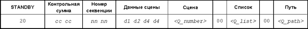
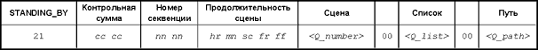
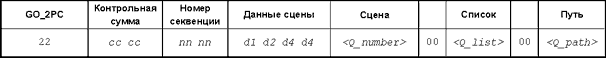
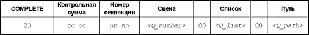
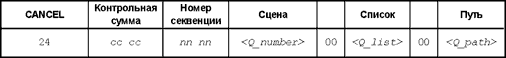
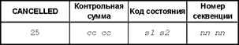
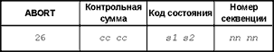
Номер секвенции
Нумерация сцен в сообщениях от контроллера к контролируемому устройству происходит в протоколе 2PC так же, как и в обычных сообщениях MSC (то есть с помощью полей Q_number, Q_list или Q_path, см. предыдущую статью).
Кроме того, для каждого из сообщений STANDBY, GO_2PC и CANCEL главный контроллер генерирует уникальный номер (от 1 до 16383), который называется номером секвенции. Этот же номер передается в обратных сообщениях (STANDING_BY, COMLETE, CANCELLED и ABORT), и по нему главный контроллер определяет, к какой сцене относится сообщение. Таким образом, в обратных сообщениях достаточно использовать только номер секвенции, полный номер сцены передавать не нужно.
Номера секвенций позволяют работать по методу 2PC простым устройствам, таким как различные детекторы и датчики. Например, детектор газа может не понимать концепцию сцен. При получении сообщения STANDBY он просто проверяет наличие газа. Если газ не обнаружен, детектор отвечает сообщением ABORT, если обнаружен — сообщением STANDING_BY. Детектор игнорирует поля типа Q_number и просто копирует номер секвенции из входящего сообщения в исходящее. Кроме того, номера секвенций облегчают отслеживание ответных сообщений от контролируемых устройств оператору главного контроллера.
Контрольные суммы
Каждое сообщение 2PC содержит контрольную сумму, состоящую из двух MIDI-байт (14 бит). При расчете контрольной суммы поля command_format, command и data сообщения рассматриваются как массив двухбайтовых значений. Если число байт в этих полях нечетное, для расчета суммы в конец добавляется один нулевой байт. Перед расчетом те байты, которые занимает контрольная сумма, обнуляются.
Контрольная сумма рассчитывается путем простого сложения элементов полученного массива, при этом переполнения игнорируются. После чего к полученному результату прибавляется номер устройства. В завершении над полученным числом и константой 0x7F7F (32639) выполняется логическая операция AND (см. статью цикла "Передача данных.").
Сторона, принимающая сообщение, проверяет его правильность, заново рассчитывая контрольную сумму и сверяя ее с полученным значением в сообщении. Если контрольная сумма отличается на стороне контролируемого устройства, оно посылает контроллеру сообщение ABORT с кодом состояния "ошибка контрольной суммы". Если сумма отличается на стороне контроллера, он реагирует на это так, будто было получено сообщение ABORT.
Коды состояния
Коды состояния используются в сообщениях ABORT и CANCELLED и отражают причину ошибки или состояние отмененной сцены. Код состояния представляет собой беззнаковое двухбайтовое целое число. Чтобы оно могло быть передано по MIDI, два младших бита числа должны быть нулевыми. Соответственно, наименьший код состояния будет равен 4, наибольший 0xFFFC (65532). В описании сообщений статус-код выглядит как "s1 s2". Метод преобразования кода состояния в значения s1 и s2, и наоборот, показан на рис. 10.
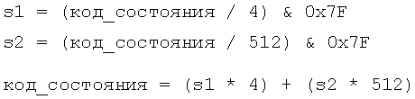
Есть три числовых диапазона кодов состояния. Первый диапазон — общий для всех форматов команд, коды состояния в нем применимы для любых типов контроллеров. Характерная особенность этих кодов в том, что все они являются отрицательными числами, если рассматривать код как целое число со знаком (подробнее о представлении целых отрицательных чисел см. четвертую статью цикла). Все коды, возвращаемые в сообщениях CANCELLED, попадают в этот первый диапазон.
Второй диапазон зависит от формата команды, то есть специфичен для устройств определенного типа. Например, код состояния 0x1008 означает "низкое давление воды", если получен от устройства типа "спецэффект" (формат команды от 0x50 до 0x5F). Но когда тот же код получен от устройства управления звуком (формат команды от 0x10 до 0x1F), он означает "неполадки в усилителе".
Третий диапазон зависит как от формата команды, так и от производителя. То есть, производители используют коды состояния в третьем диапазоне по своему усмотрению. Информация об этих кодах обязательно должна быть опубликована. Естественно, наибольшая совместимость систем достигается в том случае, если коды из этого диапазона используются как можно реже. Спецификация 2PC рекомендует всегда, когда это возможно, использовать коды состояния из второго диапазона.
Код состояния 0 зарезервирован на случай неизвестной ошибки или ошибки, для обозначения которой другие коды не подходят. Таблица на рис. 11 подытоживает вышесказанное.
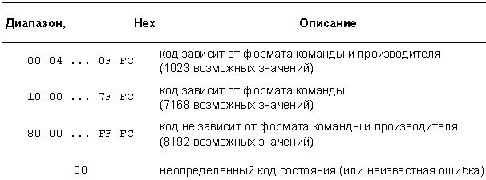
В таблицах на рис. 12 и 13 приведены все коды состояния, не зависящие от формата команды. Буквы в столбце "Сообщения" показывают, какие сообщения могут привести к получению ответа от устройства с данным кодом состояния (S=STANDBY, G=GO_2PC, C=CANCEL). Первая таблица содержит коды состояния, используемые в сообщении CANCELLED, вторая — в сообщении ABORT. Обратите внимание, что сообщение ABORT, посланное прибором в результате обработки сообщения CANCEL, может иметь только два кода состояния: "неизвестная/неопределенная ошибка" и "ошибка контрольной суммы". Код состояния "тайм-аут" никогда не появляется в реально передаваемых сообщениях, он включен для упрощения внутреннего устройства контроллера.
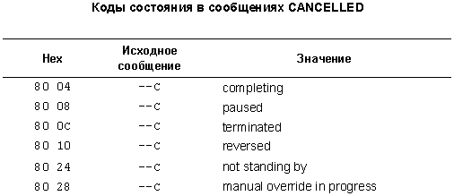
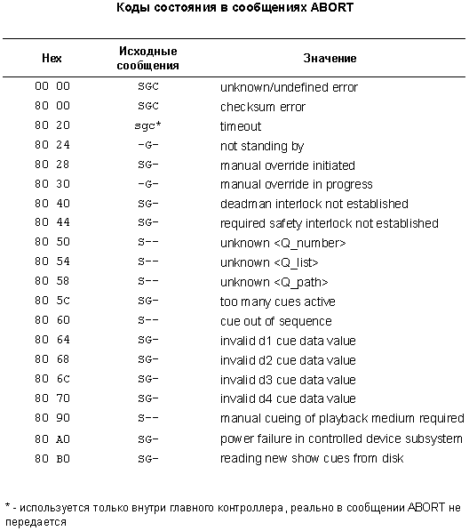
В таблице на рис. 14 перечислены коды состояния из второго диапазона, то есть коды, которые зависят от формата команды, но применимы ко всем производителям устройств.
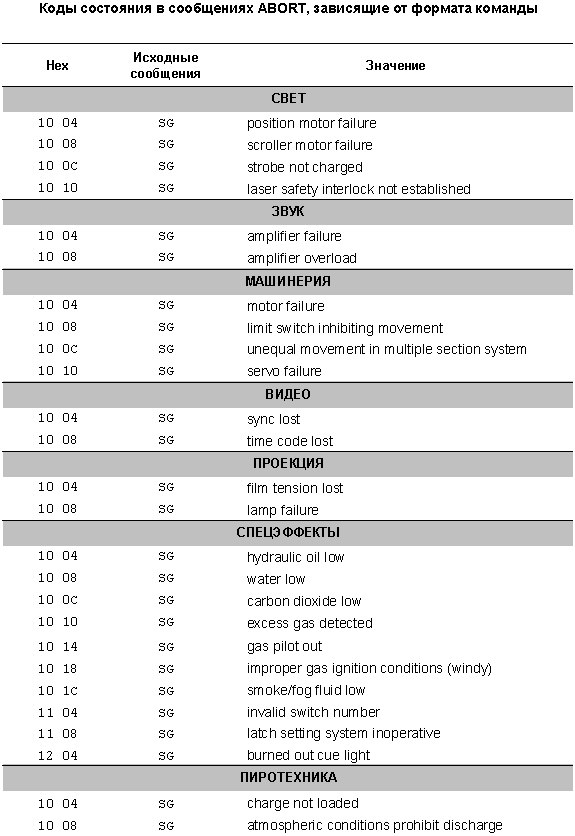
Данные сцены
В сообщениях STANDBY и GO_2PC используются четыре семибитных байта данных. Эти байты должны присутствовать обязательно, независимо от того, используются ли они контролируемым устройством или нет. Если корректные значения d1-d4 для данной сцены (или для данного прибора) неизвестны, на их месте должны быть переданы нули.
Байты данных позволяют сопоставить со сценой дополнительную информацию. Например, в световых пультах, работающих по принципу "Go On, Go Off", используется величина "Go Level", или gl, которая задается выражением gl = d1 + (d2*128). Последовательность команд STANDBY-GO_2PC со значением gl=255 эквивалентна команде Go On. Та же последовательность со значением gl=0 эквивалентна команде Go Off. Допустимы и промежуточные значения gl от 0 до 255. Например, значение gl=128 эквивалентно команде "Go Cue To 50%". Любое значение gl вне диапазона 0-255 в настоящее время является некорректным, а при его получении прибор должен отправить сообщение ABORT со статус-кодом "некорректное значение данных сцены d1". Значения gl=256 и выше зарезервированы для возможных будущих расширений.
В других типах устройств использование байтов d1-d4 определяется производителем и должно быть описано в документации. Если устройство получает некорректные данные d1-d4, оно должно ответить сообщением ABORT с одним из кодов состояния "некорректное значение данных сцены dx". Например, некорректное значение d1 должно привести к сообщению ABORT с кодом "некорректное значение данных сцены d1". В тех случаях, когда ошибка данных касается более чем одного байта d1-d4, сообщение ABORT должно содержать код состояния, соответствующий наименьшему ошибочному байту. Устройства, которые понимают только часть байтов данных, например, d1 и d3, должны игнорировать значения остальных байт.
Взаимодействие устройств
Итак, выполнение сцены начинается с команды "приготовиться" (STANDBY), которую главный контролер посылает контролируемому устройству. Главный контроллер ожидает ответного сообщения STANDING_BY в течение двух секунд. Если за это время оно не приходит, главный контроллер считает, что прибор ответил сообщением ABORT. Если по любой из причин прибор не может подготовить данную сцену к выполнению, то он отвечает сообщением ABORT явно.
Ответное сообщение STANDING_BY посылается только в том случае, если запрошенная сцена известна прибору, находится в его памяти и готова к немедленному выполнению. В сообщении STANDING_BY прибор передает также максимальное время, требуемое для выполнения сцены. Позже контроллер использует это время, чтобы определить, не произошел ли сбой в контролируемом устройстве. Максимальное время может быть значительно больше реально требуемого для сцены, но никак не меньше. Если для выполнения сцены требуется вмешательство оператора, то время ожидания действий оператора также должно учитываться.
После успешного обмена STANDBY-STANDING_BY главный контроллер посылает сообщение GO_2PC, которое приводит к выполнению заданной сцены. По завершении сцены прибор отправляет в главный контроллер сообщение COMPLETE. Если во время выполнения сцены происходит сбой, прибор немедленно передает сообщение ABORT с соответствующим кодом состояния. Если сообщение GO_2PC пришло с тем номером сцены, для которого еще не поступало сообщения STANDBY (вероятно, из-за ошибки в главном контроллере), то прибор должен ответить сообщением ABORT с кодом состояния "не в режиме ожидания".
Контролируемое устройство не обязано помнить акт обмена STANDBY-STANDING_BY для какой-либо сцены продолжительное время. Например, если сцена была успешно согласована, а главный контроллер послал сообщение GO_2PC только через час после согласования, прибор может просто-напросто забыть, "о чем идет речь", и ответить сообщением ABORT с кодом состояния "не в режиме ожидания".
Возможен также случай предварительного согласования STANDBY-STANDING_BY для нескольких сцен с одним и тем же прибором до того, как будет передана первая команда GO_2PC. В этом случае устройству нужно помнить несколько сцен, находящихся в режиме ожидания. Производители должны публиковать максимальное число таких сцен. Хранимый в памяти акт обмена STANDBY-STANDING_BY очищается по получении сообщения GO_2PC. Чтобы выполнить сцену повторно, требуется новое согласование.
Тайм-ауты
Основной метод обнаружения ошибок по методу 2PC состоит в отслеживании временного интервала между отправкой сообщения прибору и получением от него ответа. Если этот интервал превышает максимально допустимый, наступает тайм-аут. Главный контроллер расценивает тайм-аут так, будто прибор передал сообщение ABORT с кодом состояния "тайм-аут". Этот "искусственный" код (поскольку он никогда не посылается прибором явно) говорит контроллеру о том, что контролируемое устройство перешло в неуправляемый режим (по крайней мере, по протоколу 2PC).
Для сообщений STANDBY и CANCEL тайм-аут равен двум секундам. Поэтому, например, сообщения STANDBY должны посылаться как минимум за две секунды до предполагаемого времени отправки сообщения GO_2PC.
Тайм-аут на сообщение GO_2PC (то есть время между отправкой этого сообщения и прихода ответного COMPLETE) не является величиной постоянной и зависит от продолжительности сцены, переданной прибором в сообщении STANDING_BY. Если после запуска сцены сообщение COMPLETE не пришло в течение 125% от указанной продолжительности, то контроллер расценивает это как тайм-аут. Дополнительные 25% нужны для учета "разброса часов" в контроллере и контролируемом устройстве.
Ожидание сообщений
Метод 2PC был разработан так, чтобы контролируемые устройства никогда не ожидали сообщений от главного контроллера. Прибор просто принимает сообщение, выполняет предписанные им действия и возвращает ответное сообщение. Даже в состоянии "наготове" прибор лишь помнит обмен STANDBY-STANDING_BY, который был произведен в недавнем времени, но не находится в постоянном ожидании команды GO_2PC.
Преимущество такого способа работы очевидно. Так как контролируемое устройство никогда не ждет сообщений, оно всегда готово принять команды ручного управления от локального оператора. Следовательно, если даже главный контроллер даст сбой, шоу может продолжаться с использованием ручного управления на каждом из устройств.
Главный контроллер по определению должен ожидать сообщений STANDING_BY, COMPLETE и CANCELLED в течение определенного времени. Более того, он должен одновременно ожидать многочисленные сообщения, чей порядок отправки не определен. Поэтому в контроллере применяется некий алгоритм обнаружения тайм-аутов для множества сообщений от множества приборов.
Обработка исключительных ситуаций
Подобная обработка основана в методе 2PC на простом принципе. Если на очередную команду главного контроллера какой-либо прибор отвечает сообщением ABORT, то вся система переходит в специальную фазу восстановления. Главный контроллер посылает всем приборам системы сообщения CANCEL, информируя их об отклонении от безошибочной последовательности сцен. Это сообщение посылается для тех сцен, которые находятся в состоянии "наготове" или уже выполняются.
Если отменяемая сцена находится в состоянии "наготове", то акт согласования STANDBY-STANDING_BY просто забывается. Если сцена уже исполняется, прибор может выполнить одно из действий:
Кроме того, в процесс может вмешаться локальный оператор и перевести прибор в режим ручного управления.
Какое из этих действий будет выполнено, зависит от оборудования и обстоятельств, при которых получено сообщение CANCEL. Если выполняемая сцена приводит к какому-либо вреду, вероятно, лучший выбор в данном случае — завершить сцену. Если сцена приводит к неопределенной, ненадежной ситуации, ее следует приостановить, сбросить или выполнить в обратном порядке. Конечное решение зависит от оборудования и ситуации в шоу.
Некоторые приборы всегда выполняют одно из перечисленных восстановительных действий, другие позволяют это действие запрограммировать. Поведение прибора при получении сообщения CANCEL должно быть документировано производителем.
Если устройство решит завершить сцену в обычном порядке, оно должно послать как сообщение CANCELLED с кодом "в процессе завершения", так и сообщение COMPLETE. Первое из них посылается в ответ на сообщение CANCEL немедленно, второе — после фактического завершения сцены. Сцены, приостановленные сообщением CANCEL, могут продолжить выполнение после обмена STANDBY-STANDING_BY-GO_2PC.
В любом случае, на сообщение CANCEL прибор должен ответить либо сообщением CANCELLED, либо сообщением ABORT. Последнее допустимо только в том случае, если в сообщении CANCEL обнаружена ошибка контрольной суммы. Если на сообщение CANCEL не получен ответ в течение двух секунд, контроллер обработает ситуацию так, будто было передано сообщение ABORT.
Сообщение ABORT, как говорилось ранее, посылается контролируемым устройством в случае сбоя при выполнении команд STANDBY, GO_2PC или CANCEL. Номер секвенции в этом сообщении говорит контроллеру о том, какое из сообщений STANDBY, GO_2PC или CANCEL вызвало сбой. Код состояния показывает наиболее значимую причину сбоя, однако могут быть и дополнительные, менее важные причины. Поэтому исправления сбойной ситуации на основе одного кода состояния может быть недостаточно.
Значимость кода состояния пропорциональна легкости, с которой сбойная ситуация может быть исправлена. Например, код "блокирующий переключатель не установлен" менее значим, чем "сбой в моторе". Первый сбой может быть исправлен немедленным вмешательством человека; второй, возможно, удастся исправить, только разобрав мотор.
Код состояния "manual overriding in progress" ("сцена в процессе ручного управления") показывает, что локальный оператор контролируемого устройства взял на себя контроль за выполнением сцены. Некоторые устройства могут игнорировать все сообщения 2PC, пока локальный оператор использует ручное управление.
Иногда сообщение ABORT не означает сбой устройства, а просто говорит о том, что ожидаемое событие все еще не произошло. Подобное поведение характерно для всевозможных датчиков и детекторов. Для таких приборов главный контроллер не передает сообщение CANCEL.
Пример работы 2PC
Посмотрим, как может использоваться метод 2PC на практике. Для простоты возьмем небольшую координированную последовательность команд, образующих сцену. Сначала опишем процесс обмена сообщениями без ошибок, затем рассмотрим несколько сбойных ситуаций и то, как они могут быть обработаны.
В сцене будет задействован моторизированный поворотный стол, на котором находится некая конструкция (предположим, небольшая декорация). Изначально декорация повернута к зрителю "спиной", так что задача стола — развернуть ее на 180 градусов, лицом к зрителю. Поворот стола происходит в течение 30 секунд. В начале сцены декорация дополнительно закрыта от зрителя иллюстрированным полотнищем, которое прикреплено к механическому штанкету №12 и поднимается перед поворотом стола. Система сценического подъема и поворотный стол работают по MIDI и имеют независимые консоли управления у операторов.
Перед началом сцены со стола должна выйти актриса. К сожалению, она выходит так, что этого не видит ни один из операторов (в реальной жизни это маловероятно, но здесь необходимо, чтобы показать большинство функций 2PC). Поэтому используется "электронный глаз", установленный так, что актриса во время своего ухода обязательно перекрывает его луч. Перед тем как начнет работать механика сцены, электронный глаз должен определить, что актриса вышла.
Естественно, ко всему этому добавляются свет и звук. Есть две звуковые и три световые сцены. Первая звуковая сцена начинается, когда актриса пересекает луч глаза, вторая — когда стол повернется наполовину, то есть на 90 градусов. Первая световая сцена начинается, когда полотнище приоткрывает декорацию, вторая — когда стол начинает поворачиваться, финальная сцена — когда декорация полностью развернется к залу.
Весь процесс управляется главным контроллером — компьютерной программой. Он разбит на несколько этапов так, чтобы программа могла отслеживать ключевые события. Например, поворот стола разбит на два этапа по 90 градусов вместо одного, полного поворота на 180. В таблице на рис. 15 показан список сцен с коротким описанием.
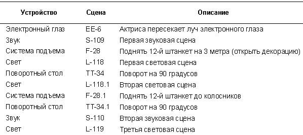
Все происходит в следующей последовательности:
Названия сцен (типа "L-119") приведены здесь для удобства, в MIDI-сообщениях они не передаются. Например, сообщение для сцены TT-34.1 будет содержать следующие параметры: command_format=24, Q_number=34.1, а L-119 — command_format=01, Q_number=119.
Обмен сообщениями без ошибок
Последовательность сообщений 2PC в упрощенном виде при безошибочном выполнении сцен данного примера приведена в таблице на рис. 16.
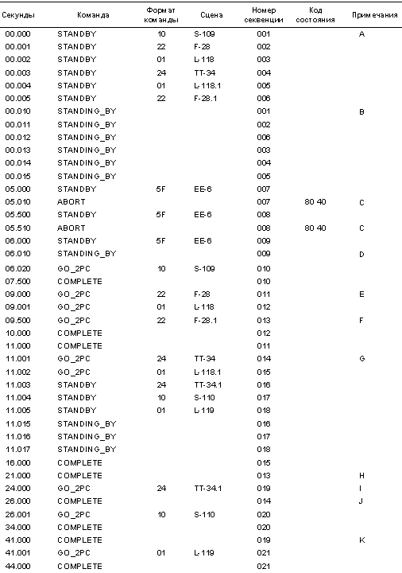
Примечания:
A. Контролер посылает сообщения STANDBY для сцен, которые должны начаться до того, как стол повернется на 90 градусов. Эти сообщения посылаются заблаговременно, с учетом возможного двухсекундного тайм-аута.
B. Получена серия ответных сообщений STANDING_BY. Сцена, к которой относится STANDING_BY, задается только номером секвенции. Видно также, что сообщения STANDING_BY получены не в том порядке, в каком отправлены сообщения STANDBY. В данном случае система сценического подъема послала два сообщения STANDING_BY одно за другим.
C. Электронный глаз ответил на сообщение STANDBY сообщением ABORT, так как актриса еще не пересекла луч.
D. Электронный глаз ответил на сообщение STANDBY сообщением STANDING_BY — актриса, наконец, пересекла луч. Поскольку больше нам электронный глаз не нужен, мы не будем посылать ему сообщение GO_2PC. Однако это равносильно отмене сцены, и в соответствии со спецификацией 2PC мы должны были бы послать для сцены EE-6 сообщение CANCEL. Но для простых устройств-детекторов вроде электронного глаза это необязательно, так как для них команда GO_2PC все равно никогда не посылается.
E. Обратите внимание на столбец секунд. Между приемом сообщения STANDING_BY от электронного глаза в момент времени 06.010 и отправкой сообщения GO_2PC для света и системы подъема прошла задержка примерно в три секунды (время, необходимое для ухода актрисы).
F. Сообщение GO_2PC для сцены 28.1 отправлено перед получением сообщения COMPLETE для сцены 28. Контроллер системы подъема понимает это так, что штанкет №12 должен продолжать подъем и после завершения сцены 28.
G. По получении сообщения COMPLETE для сцены 28 можно приступать к выполнению сцен 34 поворотного стола и света 118.1. В это время происходит также обмен сообщениями STANDBY- STANDING_BY для оставшихся сцен.
H. Штанкет №12 поднят до колосников.
I. Сообщение GO_2PC для сцены 34.1 поворотного стола отправлено перед получением сообщения COMPLETE для сцены 34. Так же, как и система подъема, контроллер стола интерпретирует это как сигнал не прекращать движения после отправки сообщения COMPLETE для сцены 34.
J. После завершения сцены 34 включается звуковая сцена 110.
K. После завершения сцены 34.1 включается световая сцена 119.
Ошибки, обнаруженные на ранней стадии
Теперь предположим, что во время выполнения нашей сцены произошли кое-какие ошибки. Сначала рассмотрим ошибку, которая приводит к прекращению всей сцены. Предположим, контроллер системы подъема обнаружил неполадку одного из лебедочных моторов, связанных с двенадцатым штанкетом. Тогда система подъема вместо STANDING_BY вернет сообщение ABORT. После чего главный контроллер (компьютерная программа) ответит сообщением CANCEL для всех сцен, которым было отправлено сообщение STANDBY. Последовательность сообщений может выглядеть так, как показано на рис. 17.
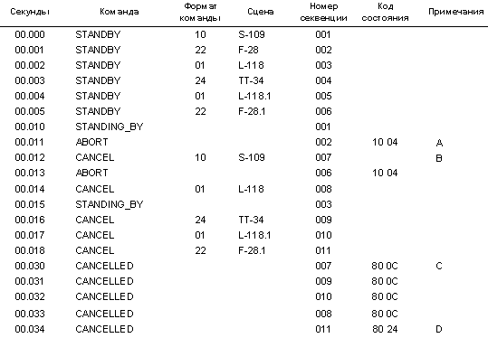
Примечания:
A. Первая сцена системы подъема возвращает сообщение ABORT с кодом состояния "сбой в моторе". Этот код преобразуется в текстовое сообщение, которое выводится оператору системы.
B. Всем контролируемым устройствам посылается сообщение CANCEL для тех сцен, которые еще не завершились. Это в соответствии с требованиями 2PC по восстановлению после сбоя (см. ранее). Так как отдельные приборы все еще обрабатывают сообщения STANDBY, сообщения STANDING_BY и CANCEL перемешиваются во времени друг с другом.
C. К главному контролеру начинают приходить сообщения CANCELLED. Как и в случае с сообщениями STANDING_BY, они приходят не в том порядке, в каком были отправлены сообщения CANCEL. Статус-код сообщений CANCELLED — "terminated", так как ни одна из отмененных сцен не начала выполняться.
D. Главному контроллеру не остается ничего другого, как отменить сцену F-28.1 (сообщение CANCEL в момент времени 0.018 с). Так как контроллер системы подъема уже забыл, что сцена F-28.1 была в состоянии "наготове", он отправляет главному контроллеру сообщение CANCELLED со статус-кодом "не в режиме ожидания".
Как видно из этого гипотетического примера, протокол 2PC успешно выявил неполадку с лебедочным мотором. Начало поворота площадки было автоматически остановлено. Декорация на площадке не повернулась и не порвала полотнище, которое осталось неподвижно висеть. Кроме того, стейдж-менеджер за главным контроллером был проинформирован о неполадке сообщением на экране компьютера.
Ошибки, произошедшие во время выполнения сцены
Они обрабатываются почти так же, как и вышеуказанная ошибка. Все ожидающие или выполняющиеся сцены завершаются сообщением CANCEL от главного контроллера. Отличие здесь в том, что число возможных вариантов выключения безобразия на сцене значительно увеличивается. И выбор правильного решения не всегда очевиден.
Спецификация рекомендует разработчикам тщательно рассмотреть все варианты — от продолжения работы как ни в чем не бывало до возврата в исходное состояние. Предположим, что мотор поворотного стола из нашего примера сломался после поворота стола на 45 градусов. Тогда, спустя где-то 18 секунд от начала сцены (см. рис. 16), главному контроллеру будет передано сообщение ABORT.
Поле чего все сцены получат сообщения CANCEL. Две из них, находящиеся в состоянии "наготове" (S-110 и L-119), обработают отмену "по-простому", забыв, что им было послано сообщение "приготовиться". Однако обработка сообщения CANCEL в сцене F-28, которая к этому моменту еще не завершилась, более проблематична. Так как полотнище продолжает подъем, то вероятно, лучше всего поднять его до конца, дав сцене F-28 полностью завершиться, с возвращением статус-кода "completing" в сообщении CANCELLED и последующим сообщением COMPLETE. Но если бы по сценарию полотнище должно было не подниматься, а опускаться, показывая зрителю нанесенную на него картину, сцену F-28 следовало бы, наверное, завершить немедленно.
Сравнительная характеристика 2PC и MSC
Подытожим сказанное выше сравнительной характеристикой обоих наборов команд.
Обычные команды MSC посылаются в любой момент времени и выполняются немедленно. Команды 2PC планируются, образуя нечто вроде сценария, в котором последовательность сцен должна выполняться совершенно определенным образом и никак иначе. Обычные сообщения MSC хорошо подходят для мероприятий типа Live Show (например, для рок-концертов, где нет жесткого планирования) и для медиа-элементов, которые не представляют угрозы безопасности, таких как свет, звук и видео. Команды 2PC больше подходят для запрограммированных шоу и для медиа-элементов, которые влияют на безопасность, например, машинерия и пиротехника.
В наборе команд MSC есть несколько сообщений, которые приводят к различным электрическим или механическим процессам в контролируемом устройстве, например, команды GO, SET, FIRE, STOP и RESUME. Набор команд 2PC содержит лишь одно сообщение, приводящее к действию — GO_2PC. К какому результату приведет данное сообщение, зависит от списка сцен, сохраненного в контролируемом устройстве, и от того, как этот сценарий будет интерпретирован.
Главное преимущество MSC перед 2PC — быстрый отклик на запрошенное действие и простая конфигурация системы ("отрытая петля"). Быстрый отклик происходит по двум причинам. Во-первых, MSC требует одного сообщения для одного действия. 2PC требует, по крайней мере, трех. Во-вторых, 2PC включает задержку (тайм-аут) продолжительностью до двух секунд между запросом на действие и началом выполнения этого действия.
Метод 2PC имеет два преимущества перед MSC. Во-первых, 2PC может координировать действия множества контролируемых устройств, с четко определенными последствиями при сбое одного из устройств. Во-вторых, в 2PC встроена система обнаружения ошибок и восстановления после сбоя.
Отличия между сообщениями 2PC и рядовыми сообщениями MSC настолько принципиальны, что каждый конкретный прибор, как правило, поддерживает только один набор команд — либо 2PC, либо MSC, но не оба сразу.